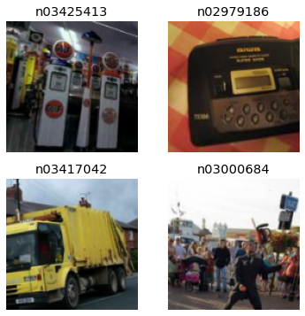
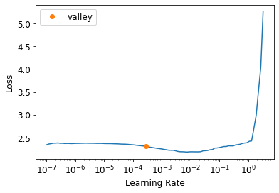
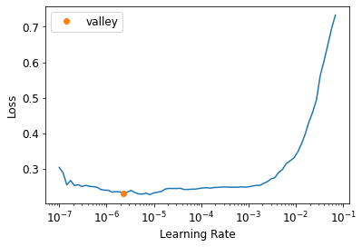
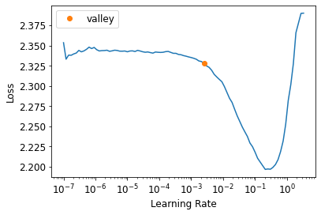

Notes on fastai Book Ch. 14
#hide
# !pip install -Uqq fastbook
import fastbook
fastbook.setup_book()#hide
from fastbook import *import inspect
def print_source(obj):
for line in inspect.getsource(obj).split("\n"):
print(line)ResNets
- Deep Residual Learning for Image Recognition
- introduced the concept of residual (skip) connections
Going Back to Imagenette
def get_data(url, presize, resize):
path = untar_data(url)
print(path)
return DataBlock(
blocks=(ImageBlock, CategoryBlock), get_items=get_image_files,
splitter=GrandparentSplitter(valid_name='val'),
get_y=parent_label, item_tfms=Resize(presize),
batch_tfms=[*aug_transforms(min_scale=0.5, size=resize),
Normalize.from_stats(*imagenet_stats)],
).dataloaders(path, bs=128)URLs.IMAGENETTE_160'https://s3.amazonaws.com/fast-ai-imageclas/imagenette2-160.tgz'dls = get_data(URLs.IMAGENETTE_160, 160, 128)dls.show_batch(max_n=4)
Average Pooling
- take the average of activations across a convolutional grid
- an alternative to the approach of using stride-2 layers to downscale input dimensions to the a single output vector
- used in fully convolutional networks to allow the model to be used on image sizes other than what the model was trained on
Note: A fully convolutional network is a good choice when the objects you want to classify don’t have a single correct orientation or size (e.g. most natural photos) * It would not be a good choice for applications like MNIST where their is a fixed correct orientation for each character
# Take the mean over the x and y axes
# Will always convert a grid of activations into a single activation per image
def avg_pool(x): return x.mean((2,3))def block(ni, nf): return ConvLayer(ni, nf, stride=2)
def get_model():
return nn.Sequential(
block(3, 16),
block(16, 32),
block(32, 64),
block(64, 128),
block(128, 256),
nn.AdaptiveAvgPool2d(1),
Flatten(),
nn.Linear(256, dls.c))ConvLayerfastai.layers.ConvLayerprint_source(ConvLayer)class ConvLayer(nn.Sequential):
"Create a sequence of convolutional (`ni` to `nf`), ReLU (if `use_activ`) and `norm_type` layers."
@delegates(nn.Conv2d)
def __init__(self, ni, nf, ks=3, stride=1, padding=None, bias=None, ndim=2, norm_type=NormType.Batch, bn_1st=True,
act_cls=defaults.activation, transpose=False, init='auto', xtra=None, bias_std=0.01, **kwargs):
if padding is None: padding = ((ks-1)//2 if not transpose else 0)
bn = norm_type in (NormType.Batch, NormType.BatchZero)
inn = norm_type in (NormType.Instance, NormType.InstanceZero)
if bias is None: bias = not (bn or inn)
conv_func = _conv_func(ndim, transpose=transpose)
conv = conv_func(ni, nf, kernel_size=ks, bias=bias, stride=stride, padding=padding, **kwargs)
act = None if act_cls is None else act_cls()
init_linear(conv, act, init=init, bias_std=bias_std)
if norm_type==NormType.Weight: conv = weight_norm(conv)
elif norm_type==NormType.Spectral: conv = spectral_norm(conv)
layers = [conv]
act_bn = []
if act is not None: act_bn.append(act)
if bn: act_bn.append(BatchNorm(nf, norm_type=norm_type, ndim=ndim))
if inn: act_bn.append(InstanceNorm(nf, norm_type=norm_type, ndim=ndim))
if bn_1st: act_bn.reverse()
layers += act_bn
if xtra: layers.append(xtra)
super().__init__(*layers)Adaptive Average Pooling
- averages a grid of activations into whatever sized destination you require
nn.AdaptiveAvgPool2dtorch.nn.modules.pooling.AdaptiveAvgPool2d- input: \((N, C, H_{in}, W_{in})\) or \((C, H_{in}, W_{in})\)
- output: \((N, C, S_{0}, S_{1})\) or \((C, S_{0}, S_{1})\), where \(S=output_size\)
print_source(nn.AdaptiveAvgPool2d)class AdaptiveAvgPool2d(_AdaptiveAvgPoolNd):
r"""Applies a 2D adaptive average pooling over an input signal composed of several input planes.
The output is of size H x W, for any input size.
The number of output features is equal to the number of input planes.
Args:
output_size: the target output size of the image of the form H x W.
Can be a tuple (H, W) or a single H for a square image H x H.
H and W can be either a ``int``, or ``None`` which means the size will
be the same as that of the input.
Shape:
- Input: :math:`(N, C, H_{in}, W_{in})` or :math:`(C, H_{in}, W_{in})`.
- Output: :math:`(N, C, S_{0}, S_{1})` or :math:`(C, S_{0}, S_{1})`, where
:math:`S=\text{output\_size}`.
Examples:
>>> # target output size of 5x7
>>> m = nn.AdaptiveAvgPool2d((5,7))
>>> input = torch.randn(1, 64, 8, 9)
>>> output = m(input)
>>> # target output size of 7x7 (square)
>>> m = nn.AdaptiveAvgPool2d(7)
>>> input = torch.randn(1, 64, 10, 9)
>>> output = m(input)
>>> # target output size of 10x7
>>> m = nn.AdaptiveAvgPool2d((None, 7))
>>> input = torch.randn(1, 64, 10, 9)
>>> output = m(input)
"""
output_size: _size_2_opt_t
def forward(self, input: Tensor) -> Tensor:
return F.adaptive_avg_pool2d(input, self.output_size)def get_learner(m):
return Learner(dls, m, loss_func=nn.CrossEntropyLoss(), metrics=accuracy
).to_fp16()
learn = get_learner(get_model())learn.modelSequential(
(0): ConvLayer(
(0): Conv2d(3, 16, kernel_size=(3, 3), stride=(2, 2), padding=(1, 1), bias=False)
(1): BatchNorm2d(16, eps=1e-05, momentum=0.1, affine=True, track_running_stats=True)
(2): ReLU()
)
(1): ConvLayer(
(0): Conv2d(16, 32, kernel_size=(3, 3), stride=(2, 2), padding=(1, 1), bias=False)
(1): BatchNorm2d(32, eps=1e-05, momentum=0.1, affine=True, track_running_stats=True)
(2): ReLU()
)
(2): ConvLayer(
(0): Conv2d(32, 64, kernel_size=(3, 3), stride=(2, 2), padding=(1, 1), bias=False)
(1): BatchNorm2d(64, eps=1e-05, momentum=0.1, affine=True, track_running_stats=True)
(2): ReLU()
)
(3): ConvLayer(
(0): Conv2d(64, 128, kernel_size=(3, 3), stride=(2, 2), padding=(1, 1), bias=False)
(1): BatchNorm2d(128, eps=1e-05, momentum=0.1, affine=True, track_running_stats=True)
(2): ReLU()
)
(4): ConvLayer(
(0): Conv2d(128, 256, kernel_size=(3, 3), stride=(2, 2), padding=(1, 1), bias=False)
(1): BatchNorm2d(256, eps=1e-05, momentum=0.1, affine=True, track_running_stats=True)
(2): ReLU()
)
(5): AdaptiveAvgPool2d(output_size=1)
(6): Flatten(full=False)
(7): Linear(in_features=256, out_features=10, bias=True)
)learn.lr_find()SuggestedLRs(valley=0.0008317637839354575)
learn.fit_one_cycle(5, 3e-3)| epoch | train_loss | valid_loss | accuracy | time |
|---|---|---|---|---|
| 0 | 1.885349 | 2.287517 | 0.341401 | 00:03 |
| 1 | 1.525377 | 2.245459 | 0.395159 | 00:03 |
| 2 | 1.290083 | 1.217583 | 0.609172 | 00:03 |
| 3 | 1.145256 | 1.164249 | 0.631338 | 00:03 |
| 4 | 1.045142 | 1.064749 | 0.668025 | 00:03 |
Note: We won’t necessarily get better results simply by adding more layers.
learn = get_learner(
nn.Sequential(
block(3, 16),
block(16, 32),
block(32, 64),
block(64, 128),
block(128, 256),
block(256, 512),
block(512, 1024),
nn.AdaptiveAvgPool2d(1),
Flatten(),
nn.Linear(1024, dls.c)))
learn.lr_find()SuggestedLRs(valley=0.0002754228771664202)
learn.fit_one_cycle(10, 0.03)| epoch | train_loss | valid_loss | accuracy | time |
|---|---|---|---|---|
| 0 | 1.826138 | 3.406225 | 0.314395 | 00:03 |
| 1 | 1.752539 | 3.521486 | 0.296051 | 00:03 |
| 2 | 1.531295 | 2.125122 | 0.382420 | 00:03 |
| 3 | 1.322462 | 1.528130 | 0.530955 | 00:04 |
| 4 | 1.180348 | 1.409803 | 0.559236 | 00:03 |
| 5 | 1.112325 | 1.155497 | 0.638217 | 00:03 |
| 6 | 0.977593 | 0.918580 | 0.706242 | 00:03 |
| 7 | 0.870830 | 1.019607 | 0.680000 | 00:03 |
| 8 | 0.780924 | 0.779768 | 0.750573 | 00:03 |
| 9 | 0.706074 | 0.767961 | 0.759490 | 00:03 |
Note: Needed to train for more epochs to achieve the same accuracy.
Building a Modern CNN: ResNet
Skip Connections
skip connections make the network easier to train with SGD
x + conv2(conv1(x))
Identity Mapping: returning the input without changing it at all
residual: prediction minus target
The authors of the ResNet paper noticed that a network with more layers performed worse than a network with fewer layers, all other factors being equal
- this was true on both the training and validation sets
Key Insight:
- start with a model with fewer layers that is trained well, and add more layers to it that do nothing at all the result should be a larger network that does exactly the same thing as the smaller network, proving there are always deep networks that should be at least as good as a more shallow network
- however, SGD was not finding these
Using skip connections also helps smooth the loss function, which makes training easier
Note: Use zero for the initial value of gamma in batch normalization * allows training at higher learning rates * recall: \(y*gamma + beta\)
class ResBlock(Module):
def __init__(self, ni, nf):
self.convs = nn.Sequential(
ConvLayer(ni,nf),
ConvLayer(nf,nf, norm_type=NormType.BatchZero))
def forward(self, x): return x + self.convs(x)Note: The above implementation requires the stride to be 1 and ni==nf in order for x + self.convs(x) to work. * Need to change the shape of x to match the result of self.convs(x) * Can use an average pooling layer with a stride of 2 to change the shape * Can use a 1x1 convolution to change the number of channels
def _conv_block(ni,nf,stride):
return nn.Sequential(
ConvLayer(ni, nf, stride=stride),
ConvLayer(nf, nf, act_cls=None, norm_type=NormType.BatchZero))class ResBlock(Module):
def __init__(self, ni, nf, stride=1):
self.convs = _conv_block(ni,nf,stride)
self.idconv = noop if ni==nf else ConvLayer(ni, nf, 1, act_cls=None)
self.pool = noop if stride==1 else nn.AvgPool2d(2, ceil_mode=True)
def forward(self, x):
return F.relu(self.convs(x) + self.idconv(self.pool(x)))noop<function fastai.imports.noop(x=None, *args, **kwargs)>print_source(noop)def noop (x=None, *args, **kwargs):
"Do nothing"
return xdef block(ni,nf): return ResBlock(ni, nf, stride=2)
learn = get_learner(get_model())learn.modelSequential(
(0): ResBlock(
(convs): Sequential(
(0): ConvLayer(
(0): Conv2d(3, 16, kernel_size=(3, 3), stride=(2, 2), padding=(1, 1), bias=False)
(1): BatchNorm2d(16, eps=1e-05, momentum=0.1, affine=True, track_running_stats=True)
(2): ReLU()
)
(1): ConvLayer(
(0): Conv2d(16, 16, kernel_size=(3, 3), stride=(1, 1), padding=(1, 1), bias=False)
(1): BatchNorm2d(16, eps=1e-05, momentum=0.1, affine=True, track_running_stats=True)
)
)
(idconv): ConvLayer(
(0): Conv2d(3, 16, kernel_size=(1, 1), stride=(1, 1), bias=False)
(1): BatchNorm2d(16, eps=1e-05, momentum=0.1, affine=True, track_running_stats=True)
)
(pool): AvgPool2d(kernel_size=2, stride=2, padding=0)
)
(1): ResBlock(
(convs): Sequential(
(0): ConvLayer(
(0): Conv2d(16, 32, kernel_size=(3, 3), stride=(2, 2), padding=(1, 1), bias=False)
(1): BatchNorm2d(32, eps=1e-05, momentum=0.1, affine=True, track_running_stats=True)
(2): ReLU()
)
(1): ConvLayer(
(0): Conv2d(32, 32, kernel_size=(3, 3), stride=(1, 1), padding=(1, 1), bias=False)
(1): BatchNorm2d(32, eps=1e-05, momentum=0.1, affine=True, track_running_stats=True)
)
)
(idconv): ConvLayer(
(0): Conv2d(16, 32, kernel_size=(1, 1), stride=(1, 1), bias=False)
(1): BatchNorm2d(32, eps=1e-05, momentum=0.1, affine=True, track_running_stats=True)
)
(pool): AvgPool2d(kernel_size=2, stride=2, padding=0)
)
(2): ResBlock(
(convs): Sequential(
(0): ConvLayer(
(0): Conv2d(32, 64, kernel_size=(3, 3), stride=(2, 2), padding=(1, 1), bias=False)
(1): BatchNorm2d(64, eps=1e-05, momentum=0.1, affine=True, track_running_stats=True)
(2): ReLU()
)
(1): ConvLayer(
(0): Conv2d(64, 64, kernel_size=(3, 3), stride=(1, 1), padding=(1, 1), bias=False)
(1): BatchNorm2d(64, eps=1e-05, momentum=0.1, affine=True, track_running_stats=True)
)
)
(idconv): ConvLayer(
(0): Conv2d(32, 64, kernel_size=(1, 1), stride=(1, 1), bias=False)
(1): BatchNorm2d(64, eps=1e-05, momentum=0.1, affine=True, track_running_stats=True)
)
(pool): AvgPool2d(kernel_size=2, stride=2, padding=0)
)
(3): ResBlock(
(convs): Sequential(
(0): ConvLayer(
(0): Conv2d(64, 128, kernel_size=(3, 3), stride=(2, 2), padding=(1, 1), bias=False)
(1): BatchNorm2d(128, eps=1e-05, momentum=0.1, affine=True, track_running_stats=True)
(2): ReLU()
)
(1): ConvLayer(
(0): Conv2d(128, 128, kernel_size=(3, 3), stride=(1, 1), padding=(1, 1), bias=False)
(1): BatchNorm2d(128, eps=1e-05, momentum=0.1, affine=True, track_running_stats=True)
)
)
(idconv): ConvLayer(
(0): Conv2d(64, 128, kernel_size=(1, 1), stride=(1, 1), bias=False)
(1): BatchNorm2d(128, eps=1e-05, momentum=0.1, affine=True, track_running_stats=True)
)
(pool): AvgPool2d(kernel_size=2, stride=2, padding=0)
)
(4): ResBlock(
(convs): Sequential(
(0): ConvLayer(
(0): Conv2d(128, 256, kernel_size=(3, 3), stride=(2, 2), padding=(1, 1), bias=False)
(1): BatchNorm2d(256, eps=1e-05, momentum=0.1, affine=True, track_running_stats=True)
(2): ReLU()
)
(1): ConvLayer(
(0): Conv2d(256, 256, kernel_size=(3, 3), stride=(1, 1), padding=(1, 1), bias=False)
(1): BatchNorm2d(256, eps=1e-05, momentum=0.1, affine=True, track_running_stats=True)
)
)
(idconv): ConvLayer(
(0): Conv2d(128, 256, kernel_size=(1, 1), stride=(1, 1), bias=False)
(1): BatchNorm2d(256, eps=1e-05, momentum=0.1, affine=True, track_running_stats=True)
)
(pool): AvgPool2d(kernel_size=2, stride=2, padding=0)
)
(5): AdaptiveAvgPool2d(output_size=1)
(6): Flatten(full=False)
(7): Linear(in_features=256, out_features=10, bias=True)
)learn.fit_one_cycle(5, 3e-3)| epoch | train_loss | valid_loss | accuracy | time |
|---|---|---|---|---|
| 0 | 1.975520 | 1.854834 | 0.346242 | 00:04 |
| 1 | 1.658158 | 1.478215 | 0.517197 | 00:04 |
| 2 | 1.377669 | 1.307936 | 0.585478 | 00:04 |
| 3 | 1.162053 | 1.106804 | 0.642548 | 00:04 |
| 4 | 1.027879 | 1.009977 | 0.674140 | 00:04 |
# Try training with a model that is twice as deep
def block(ni, nf):
return nn.Sequential(ResBlock(ni, nf, stride=2), ResBlock(nf, nf))learn = get_learner(get_model())
learn.fit_one_cycle(5, 3e-3)| epoch | train_loss | valid_loss | accuracy | time |
|---|---|---|---|---|
| 0 | 1.940119 | 1.815366 | 0.372484 | 00:05 |
| 1 | 1.602748 | 1.461486 | 0.526879 | 00:05 |
| 2 | 1.296337 | 1.346131 | 0.571210 | 00:05 |
| 3 | 1.052998 | 0.996216 | 0.678471 | 00:05 |
| 4 | 0.926301 | 0.901209 | 0.713121 | 00:05 |
A State-of-the-Art ResNet
- Bag of Tricks for Image Classification with Convolutional Neural Networks
- studies variations of the ResNet architecture that come at almost no additional cost in terms of number of parameters or computation
- used a tweaked ResNet-50 architecture and Mixup to achieve a 94.6% top-5 accuracy on ImageNet compared to 92.2% with a regular ResNet-50 without Mixup
Top-5 Accuracy
- a metric testing how often the label we want is in the top-5 predictions of our model
- used in ImageNet competition because many of the images contained multiple objects, or objects that could be easily confused or were mislabeled
Stem
- the first few layers of a CNN
- the stem has a different structure than the main body of the CNN
- the vast majority of computation in a deep convolutional network occurs in the early layers
- we should keep the early layers as fast and simple as possible
- the vast majority of parameters are in the last layers
- a ResNet block takes more computation than a plain convolutional block
def _resnet_stem(*sizes):
return [
ConvLayer(sizes[i], sizes[i+1], 3, stride = 2 if i==0 else 1)
for i in range(len(sizes)-1)
] + [nn.MaxPool2d(kernel_size=3, stride=2, padding=1)]_resnet_stem(3,32,32,64)[ConvLayer(
(0): Conv2d(3, 32, kernel_size=(3, 3), stride=(2, 2), padding=(1, 1), bias=False)
(1): BatchNorm2d(32, eps=1e-05, momentum=0.1, affine=True, track_running_stats=True)
(2): ReLU()
),
ConvLayer(
(0): Conv2d(32, 32, kernel_size=(3, 3), stride=(1, 1), padding=(1, 1), bias=False)
(1): BatchNorm2d(32, eps=1e-05, momentum=0.1, affine=True, track_running_stats=True)
(2): ReLU()
),
ConvLayer(
(0): Conv2d(32, 64, kernel_size=(3, 3), stride=(1, 1), padding=(1, 1), bias=False)
(1): BatchNorm2d(64, eps=1e-05, momentum=0.1, affine=True, track_running_stats=True)
(2): ReLU()
),
MaxPool2d(kernel_size=3, stride=2, padding=1, dilation=1, ceil_mode=False)]class ResNet(nn.Sequential):
def __init__(self, n_out, layers, expansion=1):
stem = _resnet_stem(3,32,32,64)
self.block_szs = [64, 64, 128, 256, 512]
for i in range(1,5): self.block_szs[i] *= expansion
blocks = [self._make_layer(*o) for o in enumerate(layers)]
super().__init__(*stem, *blocks,
nn.AdaptiveAvgPool2d(1), Flatten(),
nn.Linear(self.block_szs[-1], n_out))
def _make_layer(self, idx, n_layers):
stride = 1 if idx==0 else 2
ch_in,ch_out = self.block_szs[idx:idx+2]
return nn.Sequential(*[
ResBlock(ch_in if i==0 else ch_out, ch_out, stride if i==0 else 1)
for i in range(n_layers)
])rn = ResNet(dls.c, [2,2,2,2])learn = get_learner(rn)
learn.fit_one_cycle(5, 3e-3)| epoch | train_loss | valid_loss | accuracy | time |
|---|---|---|---|---|
| 0 | 1.676334 | 3.144195 | 0.332229 | 00:05 |
| 1 | 1.330461 | 1.301046 | 0.601274 | 00:05 |
| 2 | 1.081648 | 1.654932 | 0.530701 | 00:05 |
| 3 | 0.883710 | 0.889572 | 0.725096 | 00:06 |
| 4 | 0.752461 | 0.770025 | 0.751592 | 00:05 |
Note: The optimized stem kept training time just as fast as before despite the model having more channels.
Bottleneck Layers
- instead of stacking two convolutions with a kernel size of 3, bottleneck layers use three convolutions
- two \(1x1\) (at the beginning and the end) and one \(3x3\)
- \(1x1\) convolutions are much faster so the block executes faster than the earlier type of ResNet block above
- allows us to use more convolutional filters
def _conv_block(ni,nf,stride):
return nn.Sequential(
ConvLayer(ni, nf//4, 1),
ConvLayer(nf//4, nf//4, stride=stride),
ConvLayer(nf//4, nf, 1, act_cls=None, norm_type=NormType.BatchZero))# Use bigger images
dls = get_data(URLs.IMAGENETTE_320, presize=320, resize=224)/home/innom-dt/.fastai/data/imagenette2-320rn = ResNet(dls.c, [3,4,6,3], 4)Note: Deeper networks like this take more epochs to show improvements in accuracy.
learn = get_learner(rn)learn.lr_find()SuggestedLRs(valley=2.2908675418875646e-06)
learn.fit_one_cycle(20, 3e-3)| epoch | train_loss | valid_loss | accuracy | time |
|---|---|---|---|---|
| 0 | 1.631725 | 1.667390 | 0.491720 | 00:26 |
| 1 | 1.396282 | 1.772770 | 0.492739 | 00:26 |
| 2 | 1.244810 | 1.644604 | 0.520764 | 00:26 |
| 3 | 1.147434 | 2.000461 | 0.433121 | 00:26 |
| 4 | 1.061841 | 1.668560 | 0.537580 | 00:26 |
| 5 | 0.971388 | 1.221623 | 0.634395 | 00:26 |
| 6 | 0.875570 | 1.315725 | 0.606369 | 00:26 |
| 7 | 0.773697 | 1.347997 | 0.625987 | 00:26 |
| 8 | 0.693710 | 1.044750 | 0.662166 | 00:26 |
| 9 | 0.642479 | 0.847296 | 0.715669 | 00:26 |
| 10 | 0.597677 | 0.815032 | 0.728662 | 00:26 |
| 11 | 0.554460 | 1.310289 | 0.632357 | 00:26 |
| 12 | 0.504132 | 0.645502 | 0.797707 | 00:26 |
| 13 | 0.444430 | 0.553372 | 0.839490 | 00:26 |
| 14 | 0.404554 | 0.524731 | 0.840510 | 00:26 |
| 15 | 0.363680 | 0.430417 | 0.869299 | 00:26 |
| 16 | 0.326445 | 0.468357 | 0.858854 | 00:26 |
| 17 | 0.291472 | 0.398314 | 0.882038 | 00:26 |
| 18 | 0.273819 | 0.441020 | 0.865987 | 00:26 |
| 19 | 0.266643 | 0.429735 | 0.868280 | 00:26 |
# Try training for much longer with MixUp
rn = ResNet(dls.c, [3,4,6,3], 4)
learn = Learner(dls, rn, loss_func=CrossEntropyLossFlat(), metrics=accuracy, cbs=MixUp).to_fp16()learn.cbs(#5) [TrainEvalCallback,Recorder,ProgressCallback,MixUp,MixedPrecision]learn.lr_find()SuggestedLRs(valley=0.002511886414140463)
learn.fit_one_cycle(100, 1e-3)| epoch | train_loss | valid_loss | accuracy | time |
|---|---|---|---|---|
| 0 | 2.357731 | 2.383324 | 0.130191 | 00:27 |
| 1 | 2.336724 | 2.336634 | 0.139108 | 00:27 |
| 2 | 2.307106 | 2.287395 | 0.160764 | 00:26 |
| 3 | 2.270103 | 2.233956 | 0.206369 | 00:27 |
| 4 | 2.230594 | 2.175580 | 0.248408 | 00:27 |
| 5 | 2.186367 | 2.114939 | 0.285605 | 00:26 |
| 6 | 2.138676 | 2.052963 | 0.314904 | 00:26 |
| 7 | 2.093770 | 1.997618 | 0.340892 | 00:26 |
| 8 | 2.050327 | 1.941644 | 0.362038 | 00:26 |
| 9 | 2.008452 | 1.897457 | 0.381146 | 00:26 |
| 10 | 1.976088 | 1.857476 | 0.393376 | 00:26 |
| 11 | 1.942721 | 1.811248 | 0.414013 | 00:26 |
| 12 | 1.913029 | 1.795007 | 0.415796 | 00:26 |
| 13 | 1.887761 | 1.753944 | 0.427771 | 00:26 |
| 14 | 1.867352 | 1.726478 | 0.446369 | 00:26 |
| 15 | 1.850482 | 1.703274 | 0.458089 | 00:26 |
| 16 | 1.820035 | 1.656702 | 0.478471 | 00:26 |
| 17 | 1.804909 | 1.627078 | 0.489172 | 00:26 |
| 18 | 1.777827 | 1.597916 | 0.509045 | 00:26 |
| 19 | 1.754695 | 1.580777 | 0.500637 | 00:26 |
| 20 | 1.730523 | 1.532980 | 0.521274 | 00:26 |
| 21 | 1.719565 | 1.506606 | 0.532229 | 00:26 |
| 22 | 1.699022 | 1.465760 | 0.549045 | 00:26 |
| 23 | 1.671000 | 1.451764 | 0.551083 | 00:26 |
| 24 | 1.642783 | 1.409297 | 0.568408 | 00:26 |
| 25 | 1.624837 | 1.379675 | 0.586752 | 00:26 |
| 26 | 1.601221 | 1.365560 | 0.586752 | 00:26 |
| 27 | 1.586046 | 1.327966 | 0.597452 | 00:26 |
| 28 | 1.569099 | 1.349460 | 0.584713 | 00:26 |
| 29 | 1.547596 | 1.318505 | 0.599236 | 00:27 |
| 30 | 1.545876 | 1.287586 | 0.611465 | 00:26 |
| 31 | 1.516503 | 1.269668 | 0.616815 | 00:26 |
| 32 | 1.510151 | 1.259776 | 0.620892 | 00:26 |
| 33 | 1.499429 | 1.274317 | 0.611720 | 00:26 |
| 34 | 1.492611 | 1.246700 | 0.622675 | 00:26 |
| 35 | 1.470544 | 1.241083 | 0.624204 | 00:27 |
| 36 | 1.453925 | 1.201963 | 0.639236 | 00:27 |
| 37 | 1.450406 | 1.166396 | 0.649172 | 00:27 |
| 38 | 1.444372 | 1.220421 | 0.629045 | 00:26 |
| 39 | 1.447028 | 1.173165 | 0.648153 | 00:26 |
| 40 | 1.425553 | 1.183527 | 0.636433 | 00:26 |
| 41 | 1.415466 | 1.161390 | 0.647643 | 00:26 |
| 42 | 1.405419 | 1.155593 | 0.648662 | 00:26 |
| 43 | 1.411261 | 1.179044 | 0.636688 | 00:26 |
| 44 | 1.404317 | 1.118105 | 0.665733 | 00:26 |
| 45 | 1.392309 | 1.119027 | 0.663949 | 00:26 |
| 46 | 1.382899 | 1.081154 | 0.674395 | 00:26 |
| 47 | 1.374947 | 1.107488 | 0.661911 | 00:26 |
| 48 | 1.364989 | 1.132930 | 0.655287 | 00:26 |
| 49 | 1.371344 | 1.078784 | 0.674904 | 00:27 |
| 50 | 1.365992 | 1.086367 | 0.673885 | 00:26 |
| 51 | 1.355748 | 1.102273 | 0.663185 | 00:26 |
| 52 | 1.346135 | 1.069236 | 0.672357 | 00:26 |
| 53 | 1.342680 | 1.059305 | 0.681019 | 00:26 |
| 54 | 1.342354 | 1.056270 | 0.683057 | 00:26 |
| 55 | 1.348057 | 1.054993 | 0.680000 | 00:26 |
| 56 | 1.327710 | 1.040115 | 0.682293 | 00:26 |
| 57 | 1.331265 | 1.082385 | 0.669299 | 00:26 |
| 58 | 1.328200 | 1.027992 | 0.686879 | 00:26 |
| 59 | 1.328389 | 1.039981 | 0.681529 | 00:26 |
| 60 | 1.319880 | 1.033769 | 0.682293 | 00:27 |
| 61 | 1.323757 | 1.039335 | 0.681783 | 00:27 |
| 62 | 1.308027 | 1.014351 | 0.690191 | 00:27 |
| 63 | 1.317649 | 1.047797 | 0.677197 | 00:27 |
| 64 | 1.291757 | 1.013592 | 0.690955 | 00:27 |
| 65 | 1.303231 | 1.045248 | 0.680255 | 00:26 |
| 66 | 1.296039 | 1.027358 | 0.684331 | 00:26 |
| 67 | 1.298419 | 1.015950 | 0.692994 | 00:27 |
| 68 | 1.295830 | 1.029434 | 0.684841 | 00:26 |
| 69 | 1.301385 | 1.021460 | 0.687898 | 00:26 |
| 70 | 1.297332 | 1.003877 | 0.695032 | 00:26 |
| 71 | 1.304215 | 1.015531 | 0.689936 | 00:26 |
| 72 | 1.301384 | 0.997708 | 0.696051 | 00:26 |
| 73 | 1.299483 | 0.999720 | 0.696561 | 00:26 |
| 74 | 1.279976 | 0.983441 | 0.702420 | 00:26 |
| 75 | 1.283374 | 0.998377 | 0.694522 | 00:26 |
| 76 | 1.297397 | 0.997266 | 0.693248 | 00:26 |
| 77 | 1.292927 | 0.989717 | 0.697580 | 00:27 |
References
Previous: Notes on fastai Book Ch. 13